| ❌ | ✅ | ✅ | ✅ | ✅ | ✅ |
|---|
urandom – Pseudo-random numbers¶
This module implements pseudo-random number generators.
All functions in this module should be used with positional arguments. Keyword arguments are not supported.
Basic random numbers

Random numbers from a range
- getrandbits(k) int¶
Gets a random integer satisfying .
- Parameters:
k (int) – How many bits to use for the result.
- randrange(stop) int¶
- randrange(start, stop) int
- randrange(start, stop, step) int
Returns a randomly selected element from
range(start, stop, step).For example,
randrange(1, 7, 2)returns random numbers from1up to (but excluding)7, in increments of2. In other words, it returns1,3, or5.
Random elements from a sequence
- choice(sequence) Any¶
Gets a random element from a sequence such as a tuple or list.
- Parameters:
sequence – Sequence from which to select a random element.
- Returns:
The randomly selected element.
- Raises:
IndexError – If the sequence is empty.
Updating the random seed
- seed(value=None)¶
Initializes the random number generator.
This gets called when the module is imported, so normally you do not need to call this.
- Parameters:
value – Seed value. When using
None, the system timer will be used.